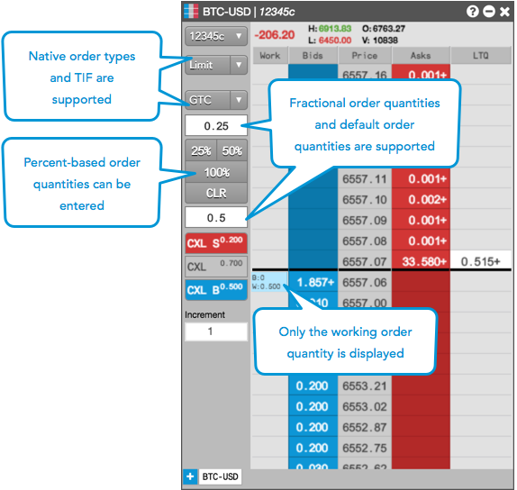
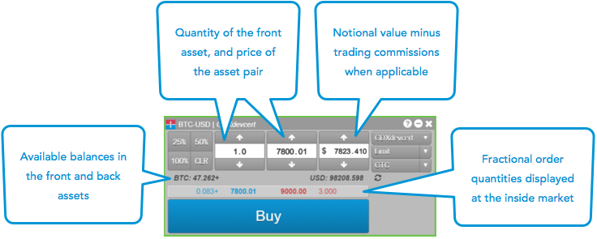
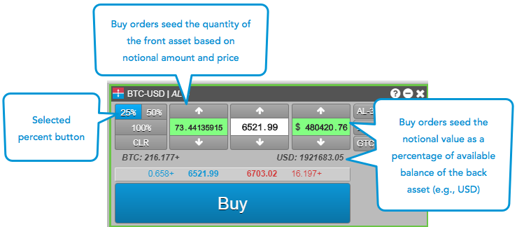

On the TT® platform, you can submit orders for all GDAX instruments using MD Trader or the Order Ticket.
Note: When submitting orders on TT Crypto, your account will default to "GDAX", and all orders are routed using your Coinbase GDAX account created on gdax.com.
When submitting orders for GDAX instruments using MD Trader, consider the following:
The following example shows submitting GDAX orders with MD Trader.

The percent buttons seed the quantity field in MD Trader. When you click a percent button, the quantity field turns green and is initially seeded as "0".
If you mouse over a cell in the Bids column, the quantity field is populated as a percentage of the available balance of the back asset (e.g., USD) of an asset pair (e.g., BTC-USD). As you mouse over each cell in the Bids column, the quantity field updates automatically at each price level. The quantity field is highlighted green to indicate that you are entering a percentage of your available asset balances.
If you mouse over a cell in the Asks column, the quantity field is populated as a percentage of the available balance of the front asset (e.g., BTC) of an asset pair (e.g., BTC-USD). However, the quantity field remains static as you hover over each cell in the Asks column at different price levels. When you move the mouse out of the Bids or Asks column, the quantity returns to "0".
The percent button values are configurable via the right-click context menu, or by using Ctrl-right click on the percent buttons.
When submitting orders for GDAX instruments using the Order Ticket, consider the following:
The following example shows submitting a Buy order with the Order Ticket for a GDAX instrument.

The percent buttons seed the notional value and quantity fields based on your available asset balances.
For Buy orders, the notional field is seeded based on the percentage of your available balance of the back asset (e.g., USD) in an asset pair (e.g., BTC-USD). For Sell orders, the quantity is seeded as a percentage of your available balance in the front asset (e.g., BTC) of an asset pair (e.g., BTC-USD). Trading commissions are factored in to each balance when applicable.
If you toggle between Buy and Sell order tickets by clicking the market price when a percent button is selected, the quantity updates automatically based on the type of Order Ticket. The fields are highlighted green to indicate that you are entering a percentage of your available asset balances.
The default percent button values are 25%, 50%, and 100% of your available balances, but the buttons are configurable. Each button is highlighted blue when selected.
